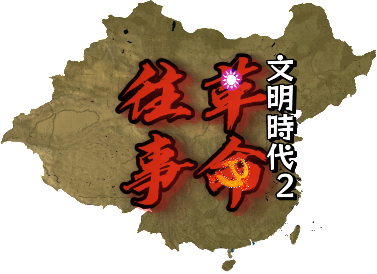

《革命往事》 | 回溯1910-1949 见证中华民族的抗争与新生
《革命往事》是一款以中国近现代史为核心的AOH 2 MOD，时间线横跨辛亥革命的炮火、军阀割据的动荡、全民族抗战的烽火，直至解放战争的胜利与新中国的诞生。
模组遵循历史史实，融入海量红色元素与爱国题材内容，通过沉浸式的游戏玩法，让你亲历那段救亡图存、砥砺前行的峥嵘岁月。
考据历史事件、人物与势力版图，让每一次决策都贴合时代背景。
植入经典革命口号，强化爱国情怀与历史使命感。
围绕关键历史节点设计专属任务，从武昌起义到开国大典，亲历历史转折的每一刻。
基于历史实力调整各方势力参数，让军阀混战、国共合作与决战等玩法更具策略性。
获取 AOH 2革命往事MOD，重回那段波澜壮阔的历史岁月
立即下载QQ交流群：276985682
群名称：文2【革命往事REVMEM】交流合作社
版本：以实际为准 | 适配 AOH2 PC端/MOB端
建议在邮件中注明【模组反馈】+ 问题/建议类型，我们将尽快回复